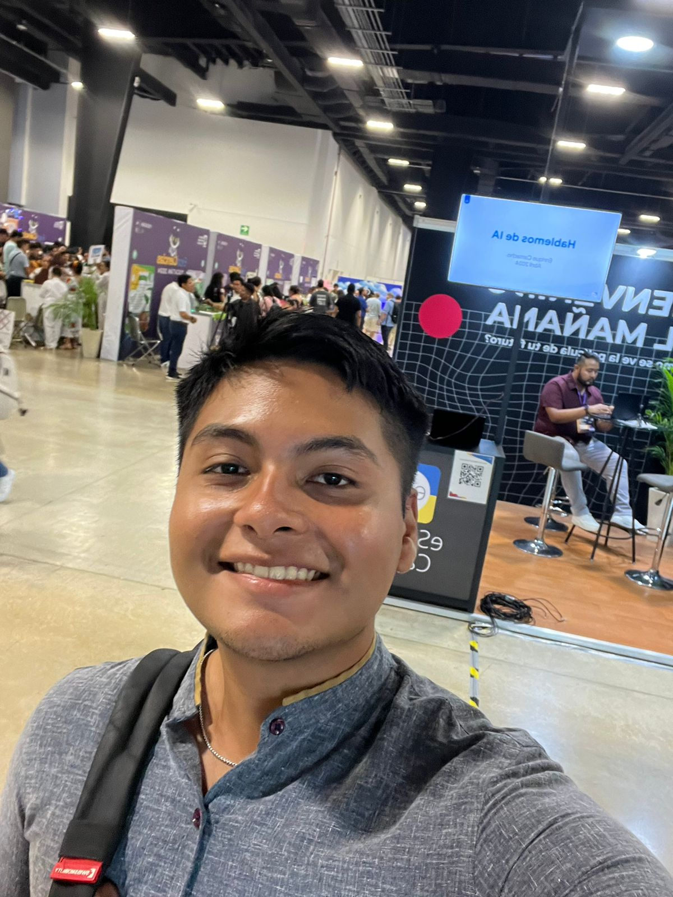

Curriculum vitae de Kairós L.
Este es el curriculum de un estudiante de Tecnologias de la Información
Datos personales
Nombre completo: Kairós Isaí Lizarraga Diaz
Dirección: Calle 57 x 58 y 60 #503A
Teléfono: 9997463348
Email: kairoslizarra777ga@gmail.com
Nacionalidad: Mexicano
Fecha de nacimiento: 19/julio/2005
CURP: LIDK050719HYNZZRA8

Experiencia laboral
Alta capacidad para trabajar en diferentes campos formativos, con experiencia en trabajo con cuidado de caninos, trabajo de maestro de medio tiempo a nivel preparatoria y de traductor ingles-español.
Educacion y formación
Estudio en la escuela sencundaria Urzaiz, Mérida, Yucatan -generación 2017/2020-
Estudio en la preparatoria Uno -generación 2020/2023-
Capacidades y aptitudes personales
Lengua Materna
-Español, hablante de nacimiento
Otros idiomas
-ingles: nivel B2 con certificado en Cambridge
-Frances:nivel A2 con certificado DELF
Capacidades y aptitudes tecnicas
Dominio de lenguajes de programación como Java, Python, C++, y JavaScript.
Experiencia en desarrollo tanto en el frontend (React, Angular) como en el backend (Node.js, Django).
Capacidad para diseñar sistemas escalables y robustos.
Conocimiento en patrones de diseño y arquitectura de software, como MVC, microservicios y RESTful APIs.
Permiso de conduccion
Permiso de conducción emitido por la Secretaría de Seguridad Pública del Estado de Yucatán, Mérida.
Informacion Adicional
Curiosidad: Un ingeniero en software curioso busca constantemente aprender y comprender nuevas tecnologías, metodologías y enfoques. Esta curiosidad impulsa la innovación y el crecimiento profesional.
Creatividad: La capacidad de pensar de manera creativa permite a un ingeniero en software encontrar soluciones originales a problemas técnicos, así como diseñar interfaces de usuario intuitivas y experiencias de usuario atractivas.